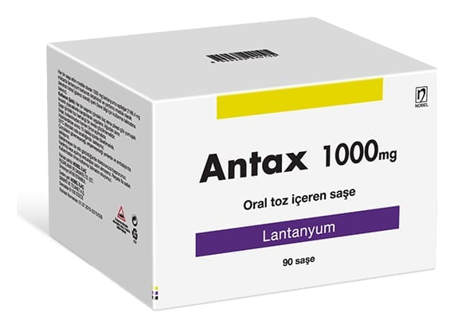

Antax 1000 mg Oral Toz İçeren Saşe ,30 Saşe

Ne için kullanılır
KT · Bölüm 1ANTAX, beyaz renkli, akıcı granüler toz içeren PET/Alüminyum/PET/PE film saşelerde; her biri 10 saşe içeren 3 kutunun bulunduğu 30 saşelik kutu ve her biri 10 saşe içeren 9 kutunun bulunduğu 90 saşelik kutu olarak takdim edilmektedir.
ANTAX kronik böbrek hastalığı olan yetişkin hastaların kanındaki fosfat seviyesini düşürmek için kullanılır.
Böbrekleri düzgün çalışmayan hastaların kandaki fosfat seviyesi kontrol edilemez. Böylece kandaki fosfat miktarı artar (doktorunuz buna hiperfosfatemi diyebilir).
ANTAX sindirim kanalınızda fosfat ile bağlanarak gıdalardan alınan fosfat emilimini azaltan bir ilaçtır. ANTAX’a bağlanan fosfat bağırsak duvarından emilemez.